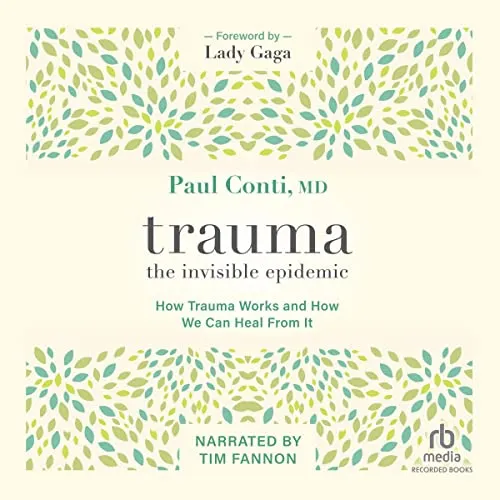
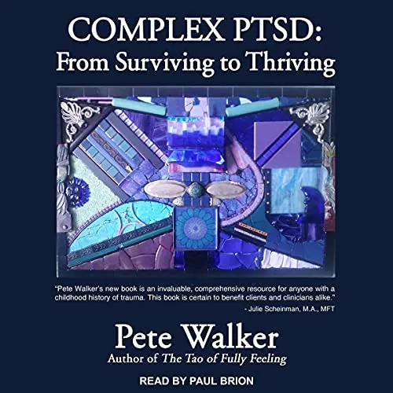
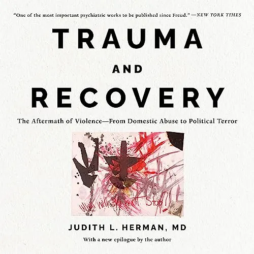

Library · Reading List
Overcoming PTSD can be the challenge of a lifetime. Within adversity lies opportunity — the goal is to come out the other end more resilient, more empathic, and more balanced.
Overcoming post-traumatic stress disorder (PTSD), especially severe cases, can be the challenge of a lifetime. No matter whether accidents, disease, war experience, or abuse have induced the debilitating disease, its effects — both physiologically and psychologically — are not only long-lasting but also challenging to address. In the case of PTSD, standard treatments with commonly effective antidepressants such as SSRIs are often in vain, while trauma therapy is a lengthy process. Short-term relief is hence not easily achieved, but novel routes such as treatment with psychedelics or stellate ganglion blocks can provide some relief. So, if you are suffering from PTSD, you're in for a marathon, an ultra-marathon really.
Yet, within adversity lies opportunity: the goal is to come out the other end more resilient, more empathic, and more balanced. To accompany the journey towards a restored self, reading about the ailment and its symptoms is, in my opinion, essential. The following books gave me not only a better understanding of the disease but also pointed out things that I could incorporate into my daily routine to ease the effects, essentially guiding me through my exciting but challenging journey.
The Collection

Book One
The American psychiatrist's book provides a concise yet holistic overview of trauma and its effects on well-being, making it the perfect starting point for your complementary reading. The key takeaway is that — as the subtitle implies — trauma is indeed an invisible epidemic. Many people have learned to cope with the impacts of minor trauma without knowing the origins of their issues. Traumatised people have a higher baseline anxiety while their baseline well-being is reduced. Moreover, Conti's book dives deep into shame and elaborates on why traumatised people feel ashamed for what happened to them. The first step of your journey is to accept that trauma is nothing you should feel ashamed of — in the end, it was inflicted on you.
View on AmazonBook Two
The Dutch psychiatry professor's book was my starting point; the beauty of this book is its comprehensiveness — from the formation of trauma to recovery from it. It starts by explaining how trauma is imprinted on the brain and how the brain's network and chemistry are affected. It presents a compelling exploration of innovative therapeutic approaches that address the intricate interplay between trauma, memory, and recovery — from IFS therapy to EMDR, neuro- and bio-feedback, yoga, theatre, and interventions with psychedelics. Once you have read and internalised van der Kolk's book, you are set for the journey; just pick the levers that suit you most and get going.
View on Amazon
Book Three
This book covers a narrower area of PTSD, namely complex cases (cPTSD). While PTSD usually results from a single traumatic event, cPTSD arises from prolonged, repeated trauma, often occurring in childhood, such as chronic abuse, neglect, bullying, or exposure to ongoing interpersonal violence. cPTSD tops up standard PTSD symptoms with issues about emotional regulation, self-esteem, a sense of disconnection and emptiness, and many more. Pete Walker not only describes the intricacies of cPTSD but also provides tools for recovery — from grounding techniques and self-compassion to mindfulness, establishing clear boundaries, inner child work, and cognitive-behavioural techniques. If you are suffering from cPTSD, this book is an excellent resource.
View on Amazon
Book Four
The Harvard professor's book explores the psychological impact of trauma and the process of healing, often from a feminist point of view. Herman examines how traumatic experiences disrupt one's sense of self and relationships, leading to a disconnection from normal life. The book outlines a therapeutic framework, highlighting the significance of remembering and mourning as crucial steps in the healing process. She explores power dynamics and emphasises the need for empathy, validation, and social change in fostering true recovery. Even though the book has a focus on violence towards women and girls, it is an important read for men — especially since it delivers insights into issues the other gender faces that are often not clear to men.
View on AmazonBook Five
Wolynn's book explores the profound impact of inherited family trauma on our relationships, health, and overall life. He introduces the concept of epigenetics, suggesting that the experiences and traumas of our ancestors can be imprinted on our genes and passed down through generations. The book delves into real-life case studies illustrating how individuals may carry the emotional and psychological burdens of their family's past without even being consciously aware of it. As the other books mentioned, Wolynn argues that becoming aware of the trauma enables us to break the cycle and release these deep-seated issues, offering a roadmap to break free from the invisible chains that hold traumatised people back.
View on AmazonThe books recommended above should really help you with working through trauma and complement medical as well as therapeutic interventions. Not only the increased comprehension of the disease that I acquired from these books helped me a lot, but also the little interventions recommended supported me in managing the symptoms.
In essence, the path to overcoming PTSD unfolds as a profound journey, demanding a blend of medical, therapeutic, and self-help interventions. Despite the inherent challenges, it is crucial to underscore the potential for resilience to sprout from adversity. Within the struggle lies a transformative opportunity, and the suggested resources stand as guiding beacons, steering individuals toward health, well-being, and a revitalised enthusiasm for life.
Wishing you the best of luck on your journey.